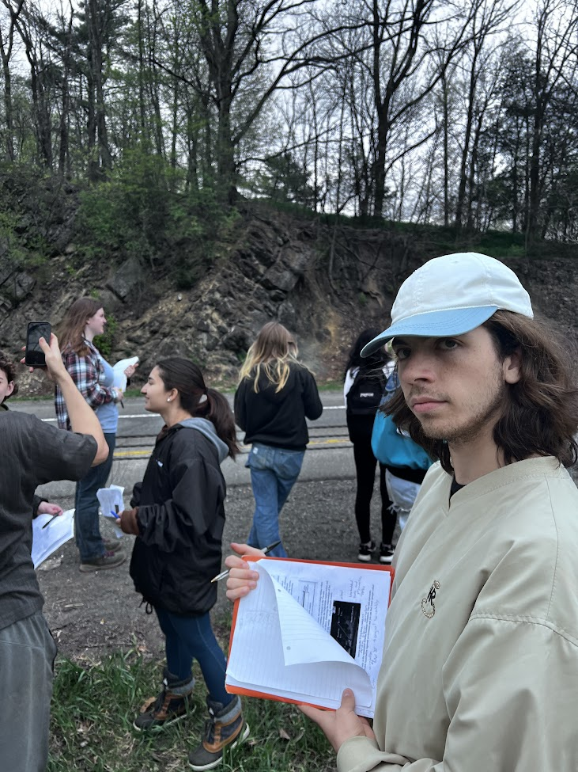
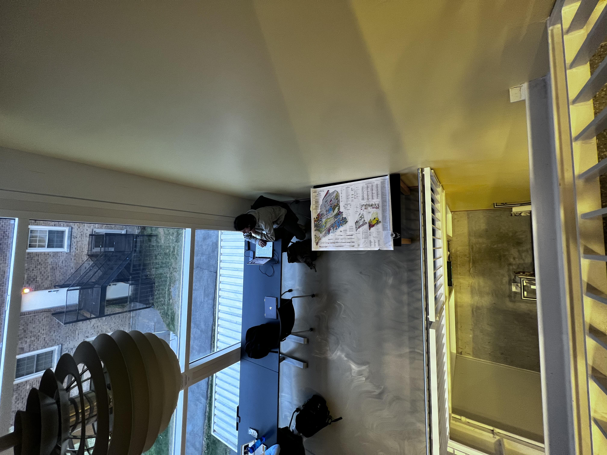

Featured Projects:
Hudson Valley Geology Project
The point and idea of this project was to create a historical timeline/ story for how different rock structures around the hudson valley were formed. This provides a helpful context for what we stand on and how the area is where it is today!
Geologic History of Maine
In this project my task was to map out and tell the story of the formation of Maine, name geologic structures and discoveries, map formation of volcanoes, faults, major events. Overall this was a stressful project but very cool when it was done!
The Bass
I don't know where to begin with the bass, it has done a lot for me. Through picking up an instrument it has given me a new outlet to express myself, a similar outlet in a way to coding or art. In a way to me music has become a language, not one with words but one with expression of any emotion.
This Project!?
This Project was a great experience for me, I never knew how websites really worked or how they were constructed. Now, through this class, I am Web Developement Certified and super happy that I took this class! I would recommend this class for literally everybody because, it isn't really scary in the end, instead I would say it is a great form of expression and a helpful life skill!!